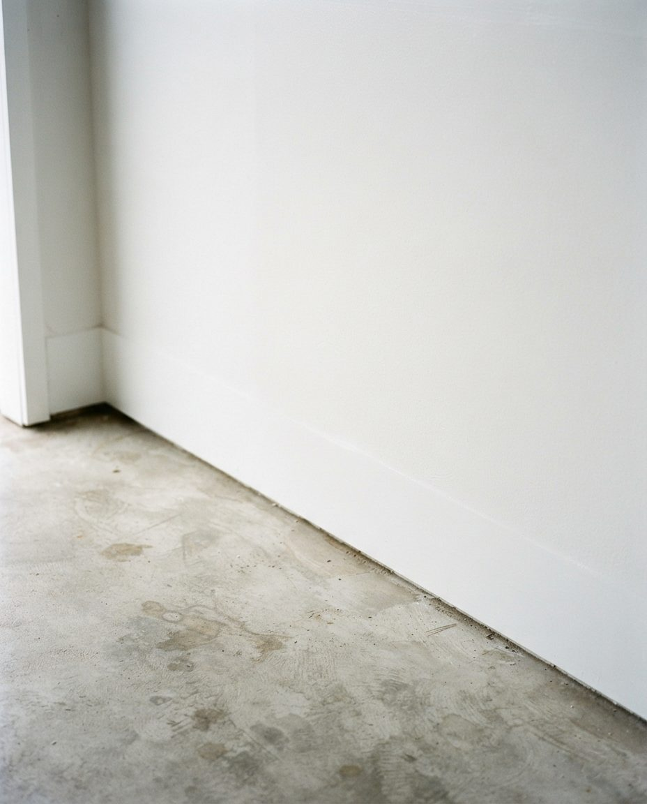
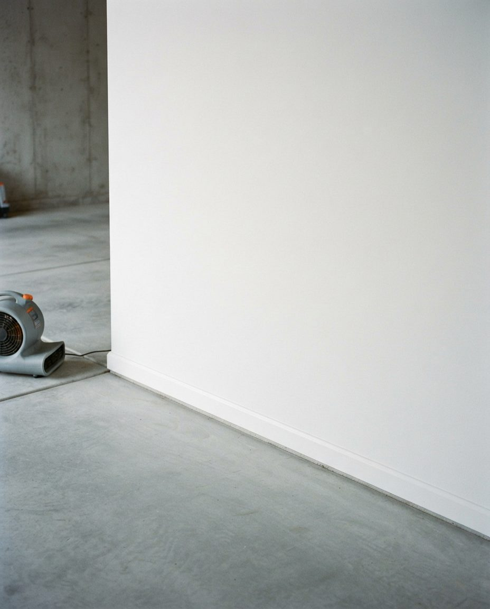

Vancouver garages don't get dirty the way prairie garages do. Ours get wet. Mould on the drywall, mildew in the cardboard, white efflorescence blooming across the slab, moss creeping under the door from the lane. We deep clean Vancouver garages for the climate they actually live in — pressure washing, degreasing, mould and mildew treatment, and full sanitisation, contents moved and replaced.
If you've moved here from anywhere east of the Rockies, you've noticed it. In Calgary or Winnipeg, a dirty garage means road salt, sand, gravel dust and the grey crust that freeze-thaw cycles leave on everything. It's an abrasive problem. You sweep it, you wash it, it's gone.
Vancouver's problem is the opposite. It's a biological problem, and it's driven by water that never quite leaves. The city sits in a coastal temperate rainforest and takes on roughly 1,200 millimetres of rain a year across more than 160 wet days — the bulk of it between October and April, when temperatures stay mild enough that nothing freezes and nothing fully dries out. That combination, sustained moisture at moderate temperature, is close to laboratory-ideal for mould, mildew, moss and algae.
Three things about Vancouver housing stock make it worse:
A musty smell in a Vancouver garage is not "old garage smell." It is microbial volatile organic compounds — the gases mould releases as it metabolises. If you can smell it, there is active growth somewhere, and it is usually behind or beneath something rather than on a surface you can see. Finding it is part of what we do before we start cleaning.
The most common call we get in Vancouver. Typically it presents on the lower 60 cm of drywall (where the slab is wicking), on the north-facing wall (which never gets sun), on the back of anything pushed flat against an exterior wall, and inside cardboard. We treat affected surfaces, remove contaminated porous materials that can't be salvaged, and dry the space properly rather than sealing moisture in behind a fresh coat of something.
Health Canada is direct on this point: indoor mould exposure causes eye and throat irritation and respiratory symptoms and worsens asthma, with children and older adults most affected. A garage that shares a wall or a door with living space is not a sealed compartment.
Chalky white crystalline deposits on the slab or on the lower block wall. It's not mould. It's mineral salt carried out of the concrete by moving water and left behind when the water evaporates. Spray it: efflorescence dissolves, mould doesn't.
Efflorescence is harmless in itself. What matters is what it proves — that your slab is actively passing water right now. We remove the deposits mechanically and with the correct acid-based treatment for the concrete's age and condition, and we tell you where the water is getting in, because cleaning it without addressing the source means it returns by next spring.


Efflorescence removed and neutralisedMineral salts cleared mechanically and with a matched acid treatment, then fully neutralised. We also identify where the water is entering, because otherwise it returns by next spring.
Uniquely coastal. Moss and green algae establish along the bottom of the garage door, in the door track, on the apron where the driveway meets the slab, and on north-facing exterior walls of detached lane garages. Beyond looking neglected, moss holds water against the structure and rots the bottom rail of a wooden door. We remove it and treat the surface so it doesn't re-establish over one wet season.
Vancouver consistently ranks among the most rat-affected cities in Canada, and the roof rat — the black rat, an excellent climber — specifically favours garages, sheds, carports and attics. Mild wet winters keep them breeding longer here than in colder cities. The City of Vancouver's own guidance for residents is to remove clutter and rubbish from the garage, carport and yard, and the City is explicit that pest control on private property is the owner's responsibility.
We clear nesting material, dispose of contaminated contents, and sanitise affected surfaces with appropriate PPE and procedure. To be clear about scope: we are not a licensed pest control operator. If there is an active infestation, get an exterminator in to seal entry points first. Cleaning before that just hands them a tidier home.
The one problem Vancouver shares with everywhere else. Motor oil, transmission fluid, coolant, brake fluid and the grey tyre-rubber film that builds up under a daily driver. On a porous older slab these penetrate deep and won't lift with a domestic pressure washer. We use commercial degreasers with hot-water extraction and, for set-in stains, a poultice draw-out that pulls oil back up out of the pore structure over several hours.
"Garage" means five genuinely different buildings in this city, and they need different work.
Kitsilano, Mount Pleasant, Grandview-Woodland, Hastings-Sunrise, Strathcona, Riley Park. Single car, off the lane, often 1920s or 1930s, usually unheated with no insulation and frequently no working power or water. These have the worst moisture and rodent exposure in Vancouver, and the slab is often original — soft, porous and sometimes spalling. We bring our own water and generator to these jobs as standard. Low-pressure chemical cleaning often beats high-pressure washing on a slab this old.
That distinctive boxy two-storey with the low-pitched roof, built by the thousand across East Vancouver, Renfrew-Collingwood, Killarney, Victoria-Fraserview and Sunset. Garage is usually attached or under-house at grade level. The under-house configuration means moisture and mould in the garage is directly connected to the air in the home, so the sanitisation step matters more here than anywhere else.
Vancouver's laneway housing programme has put roughly 550 sq ft homes where the garage used to be, often with a garage or parking portion retained beneath or beside. Two jobs come out of this: cleaning the surviving garage space, and — more often — the full clear-out and clean of an old garage before demolition or conversion. If you're planning a laneway build, clearing and cleaning the existing structure is the first physical step, and we'd rather do it on your schedule than on your contractor's.
Common across Richmond, Burnaby, Coquitlam, Surrey and newer East Vancouver developments. Long and narrow, one car deep by two, with the hot water tank and furnace usually in there too. The constraint is access, not dirt: everything has to come out through one door. We also flag anything stored there likely to draw a bylaw notice, because BC Fire Code and most strata bylaws restrict combustible storage in garages and parkades more tightly than owners expect.
Downtown, West End, Yaletown, Coal Harbour, Olympic Village. We clean individual assigned stalls and lockers. Common-property parkade scrubbing is a commercial contract on a ride-on scrubber and we'll refer you to a parkade specialist rather than pretend otherwise.
Before anything gets wet, we walk the garage and identify where water is entering — failed door seal, negative grade at the apron, downspout discharging against the foundation, a slab actively wicking. We check slab condition and note anything too deteriorated for high pressure. We locate the source of any musty odour.
Everything comes out onto tarps in the driveway or lane. You do not need to pre-empty the garage. This is also the point at which most Vancouver clients decide they'd rather not put half of it back, which is where our decluttering service takes over.
Ceiling down. Cobwebs, dust, leaf litter blown in from the lane, insulation debris, and any rodent nesting material — the last handled with appropriate PPE and bagged separately for disposal.
Affected surfaces are treated with the appropriate product for the substrate — different approach for drywall, bare framing, concrete block and painted surfaces. Porous materials too far gone to save are removed rather than sprayed and left. Moss and algae along the door line and apron are cleared and treated.
Commercial-grade degreaser applied to oil and fluid staining with the dwell time it actually needs. Set-in stains get a poultice treatment that draws oil back up out of the concrete rather than smearing it across the floor.
Hot-water pressure washing at a pressure and nozzle selection tested on your concrete first. Older Vancouver slabs get reduced pressure and a surface cleaner attachment; badly deteriorated slabs get low-pressure chemical cleaning and wet extraction instead of a jet.
Mineral deposits removed mechanically and chemically. All surfaces sanitised to knock down residual microbial load and eliminate odour at source rather than masking it with fragrance.
We force-dry the space rather than closing a wet garage — closing it wet is how you get a worse mould problem than you started with. Contents go back. You get a short written note on every moisture entry point we found and what it would take to fix, whether or not that's work we do.


Wall base cleaned, then force-driedThe bottom 30–45 cm of wall is where Vancouver garages fail first. We never close a wet garage door on a damp slab — air movers stay until it's genuinely dry, not just surface-dry.
Being specific about scope up front is faster than arguing about it afterwards.
| Included in a deep clean | Quoted separately | Not something we do |
|---|---|---|
| Contents out and back in | Sorting, downsizing and organising contents | Licensed pest control / extermination |
| Cobweb, dust and debris removal | Junk hauling and disposal by volume | Certified mould remediation of living space |
| Surface mould and mildew treatment | Drywall replacement after mould removal | Asbestos or lead abatement (pre-1990 buildings) |
| Moss and algae removal at door line and apron | Shelving, cabinets and overhead rack installation | Structural or foundation repair |
| Degreasing and oil stain treatment | Epoxy or polyaspartic floor coating | Common-property parkade scrubbing |
| Hot-water pressure wash and slab clean | Door seal and weatherstrip replacement | Electrical or EV charger installation |
| Efflorescence removal | Gutter and downspout redirection | Roofing repair on detached garages |
| Full sanitisation and forced dry-down | Same-day emergency and pre-listing turnarounds | Anything requiring a trade ticket we don't hold |
| Written moisture entry-point report | Recurring seasonal maintenance plans | — |
Vancouver pricing sits above the national average for the same reason everything here does — labour cost, drive times across a region split by two inlets and a river, and Metro Vancouver tipping fees. What follows is honest starting pricing. The final number depends on the garage, and we'd rather look at it than guess.
Transparent starting prices. No hidden disposal surcharges. Free on-site quote before any work begins.
Search "garage cleaning Vancouver" and you get four different businesses pretending to be the same thing. Here's the honest breakdown, including where someone else is the better call.
| GarageScape | Junk removal | Cabinet installer | DIY weekend | |
|---|---|---|---|---|
| Hauls away what you don't want | Yes | Yes — this is their core service | No | You and a truck rental |
| Deep cleans the slab and walls | Yes | No | Grinds the floor for coating only | Domestic washer, limited result |
| Treats mould, mildew and moss | Yes | No | No | Rarely done correctly |
| Removes efflorescence | Yes | No | As coating prep only | Usually mistaken for mould |
| Sorts and organises what stays | Yes | No | No — sells you storage instead | Yes, in theory |
| Installs cabinets and floor coating | No — we refer | No | Yes — this is their core service | No |
| Typical Vancouver spend | $249–$899 | $150–$650 by volume | $4,000–$15,000+ | $200 in supplies, two weekends |
| Best when | The garage is dirty, damp and disorganised | You just need volume gone | The garage is already clean and you want it beautiful | It's mildly untidy and you have the time |
We'll say this plainly: if your Vancouver garage is already clean and dry and you want custom cabinetry and a polyaspartic floor, call a cabinet company. That's a genuinely different product and they do it well. We're the people you call when the garage needs to be fixed before it can be beautiful — and if you're planning a coating, a proper deep clean and moisture assessment first is the difference between a floor that lasts fifteen years and one that delaminates in three because it was coated over a slab that was still passing water.
This is genuinely different from the rest of Canada, and getting it right doubles the value of the job.
The wet season has ended, the slab has had weeks to dry, and any mould that established over winter is at maximum visibility and minimum moisture. Clean now and the garage stays clean through a dry summer. This is our busiest period and it books out.
Underrated, and arguably the smarter booking. Cleaning before the rains start means you enter the wet season with no organic material for mould to colonise, sealed door lines, no moss holding water against the door rail, and a documented list of moisture entry points you still have dry weather to fix. A spring clean removes last winter's damage. An autumn clean prevents next winter's.
We work year-round. For an attached or under-house garage with heat, winter is genuinely no problem. For an unheated detached lane garage in January, drying is the constraint — we can still do it, we just extend the forced dry-down, and it's worth knowing that going in.
Vancouver real estate being what it is, a large share of our work is pre-listing. A garage that smells musty at an open house does real damage to a buyer's read of the whole property — it reads as "deferred maintenance" and "possible water problem," which is exactly the conversation you don't want during subject removal. We turn these around fast and we're used to working to a photography date.
We cover all 22 of Vancouver's official neighbourhoods, plus the rest of Metro Vancouver.
City of Vancouver neighbourhoods
Metro Vancouver — tap a city for local detail
GarageScape built its reputation across Calgary and area, and we're now bringing the same service to Metro Vancouver. That means our crews arrive with a decade of garage work behind them — and it means we've had to genuinely relearn the job for a rain-coast climate, because almost nothing about cleaning a Calgary garage transfers directly to cleaning a Kitsilano one. Call us and we'll tell you honestly what our availability looks like in your neighbourhood.
Most Vancouver residential garage cleans land between $249 and $649. A single-car back-lane garage with a straightforward pressure wash typically starts around $249. A standard double garage deep clean — pressure wash, degrease, wall and ceiling wipe-down, sanitise — usually runs $349 to $499. Add mould remediation, heavy efflorescence treatment or rodent-contamination sanitisation and you're generally in the $499 to $649 range. We quote on the actual garage, not over the phone.
Vancouver sits in a coastal temperate rainforest with roughly 1,200 mm of rain a year and high humidity through autumn and winter. Most garages here are unheated, uninsulated and poorly ventilated, and slabs poured before modern vapour barrier practice wick groundwater upward continuously. Sustained moisture at mild temperature, plus organic material like cardboard and wood, is exactly what mould needs. It's a climate problem, not a housekeeping failure.
Almost certainly efflorescence — mineral salt deposits left when groundwater moves through concrete and evaporates at the surface. Quick test: spray it with water. Efflorescence dissolves and disappears; mould doesn't. It's harmless itself, but it proves your slab is actively passing moisture, which is what causes mould on anything stored on that floor.
Yes, and they're a large share of our Vancouver work. Detached lane garages in Kitsilano, Dunbar, Mount Pleasant, Grandview-Woodland and Hastings-Sunrise are typically older, unheated single-car structures with the worst moisture and rodent exposure in the city. We bring our own water and power where a lane garage has neither.
Yes. Vancouver ranks among Canada's most rat-affected cities and roof rats specifically favour garages and sheds. We clear nesting debris, dispose of contaminated materials and sanitise affected surfaces. We are not a licensed pest control operator — if there's an active infestation, get an exterminator to seal entry points first, because cleaning before that just gives them a tidier home.
A single-car garage is usually 2 to 3 hours. A standard double garage deep clean is 4 to 6 hours. Garages with heavy mould, significant contents, or rodent contamination can run a full day. You get a time window before we start, not after.
No. We move contents out, clean, and put them back — that's included. If you'd rather have the contents sorted and reduced instead of just returned, that's our decluttering and organisation service, and most clients book both together because the floor is already clear.
Not when it's done correctly. Many Vancouver garages have slabs poured between the 1920s and 1960s that are softer, more porous and sometimes already spalling. We test an inconspicuous area and tune pressure and nozzle to the slab rather than running maximum pressure everywhere. On badly deteriorated concrete we switch to low-pressure chemical cleaning and wet extraction instead.
We clean individual strata garages, townhouse tandem garages and assigned parkade stalls. Many Vancouver strata bylaws and the BC Fire Code restrict what can be stored in a parkade, so we'll flag anything likely to draw a bylaw notice. Full common-property parkade scrubbing is a commercial contract — we'll refer you to a parkade specialist for that.
Once a year for most homes, ideally in late spring once the wet season has ended and the slab has dried. Garages with a known moisture problem, a workshop, or a history of mould do better on a spring and autumn schedule — and the autumn visit, before the rains start, is the one that prevents damage rather than repairing it.
Free on-site quote. Fixed price before we start. Contents moved and replaced, and a written report on every moisture entry point we find.
Serving Vancouver, Burnaby, Richmond, North & West Vancouver, New Westminster, Coquitlam, Surrey and Delta.